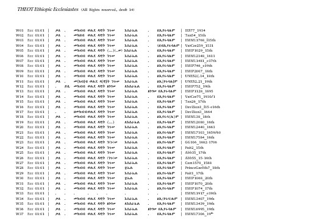

Materials for the
Study of Ethiopic
Ecclesiastes
We...
Turn text into numbers.
Identify patterns in the numbers.
Turn numbers into stories.
Ethiopic Ecclesiastes
Stuffs1-goes-here
Aligned
Texts
Texts

Click to Enlarge
The PDF is a copy of the document file in which we aligned all the words of all the manuscripts in this study. Click the image on the left to download the pdf file. Click the image on the right to see a video explaining how this data was produced or processed.
Variants

The spreadsheet shows the data produced by the THEOT script labeled “create database of variants”. Click the image on the left to open a copy of the spreadsheet. Click the image on the right to see a video explaining how this data was produced or processed.
Words
Profile
Match
Profile
Match

The spreadsheet shows the data produced by the THEOT script labeled “process database of variants”. Click the image on the left to open a copy of the spreadsheet. Click the image on the right to see a video explaining how this data was produced or processed.
Dendrogram

The jpeg shows the Dendrogram produced by feeding the R file and a CSV (comma separated values) file into the R program to generate a dendrogram. The colored boxes and stars represent our interpretation of the dendrogram, and become our working hypothesis for investigation of the book. Click the image on the left the dendrogram. Click the image on the right to see a video on THEOT Dendrograms and How to Use them.
THEOT
Text
Viewer
Text
Viewer

These links explore the THEOT Text Viewer and How to Use It. Click the image on the left to open the website directly. Click the image on the right to see a video introducing the Text Viewer and How to Use it.
Best
Representative
Manuscripts
Representative
Manuscripts

The spreadsheet shows a series of tabs that represent the various stages of processing the data with a view of identifying the best representative manuscript for each cluster. Click the image on the left to open a copy of the spreadsheet. Click the image on the right to see a video explaining how this data was produced or processed.
Minority Variants
in the 14-16th Centuries (EthI) and their Fate in the 17-20th Centuries (EthII)

The spreadsheet shows the data that establish the phenomena of minority variants in the EthI Period and their Fate in the EthII period. Click the image on the left to open a copy of the spreadsheet. Click the image on the right to see a video explaining how this data was produced and then filtered in order to see the hidden patterns of shared variation.
New Readings
from the
17th to the 20th Centuries
17th to the 20th Centuries

The spreadsheet shows the data that establish the phenomena of New Readings of the Seventeenth Century. Click the image on the left to open a copy of the spreadsheet. Click the image on the right to see a video explaining how this data was produced and then filtered in order to see the hidden patterns of shared variation.
Ecclesiastes: Sample, Best Representatives, Minor Recensions, Other Studies
- Sample of the Text: Ecc 1:1–3, 1:13, 2:3–7, 2:15, 3:16, 4:1, 4:17, 5:1–3, 5:18, 6:12[7:1], 7:12– 14[13–15] , 7:26[27], 8:8–10, 9:9, 10:8, 10:18–20, 11:1, 11:10, 12:1, 12:6–7, 12:10–11, 12:11–14
- Sample Size: 22.96% of the book.
- Sample of Manuscripts: 37. BN Abb 35 (17th), BN Abb 55 (15-16th), Cambridge Add. 1570 (1588/9), Davies Axum Zion 1 (l15th), Davies Axum Zion 3 (1664), EMIP 0746 (Chelekot Selasse 5, e19th), EMIP 0752 (Chelekot Selasse 11, 19th), EMIP 1029 (Mihur Gedam 54, 15th), EMIP 1068 (Addis Alem 26, 20th), EMIP 1070 (Addis Alem 28 = A1-IV-96 = EMML 5595, 1914), EMIP 1074 (17th), EMIP 1128 (Addis Alem 86, 1895), EMIP 2007 (Tweed 58, 18th), EMML 38 (l18th), EMML 1481 (e17th), EMML 1768 (l15th), EMML 1917 (e19th), EMML 2080 (16th), EMML 2148 (1611), EMML 2440 (1663), EMML 3407 (19th), EMML 3439 (19th), EMML 6995 (19th), EMML 7103 (1659/60), EMML 7306 (19th), EMML 7584 (16th), Faitlovitch 1 (17-18th), Faitlovitch 2 (15th), Gunda Gunde 106 (1682-1706), IES 77 (1934), Princeton Garrett Ethiopic 7 (17th), Tanasee 26 (17th), Tanasee 54 (15th), UNESCO 2.14 (18th), UNESCO 2.21 (19th), Vat Cerulli 75 (1931), Vat Cerulli 259 (1531)
- Number of Data Points Generated: 36,482.
- EA1 Best Representative – Tanasee 54 (15th).
- EA2 Best Representative – Bibliothèque nationale Abbadie 55.
- There are two EA outlier manuscripts that are about 5% different from the rest of the EA manuscripts, but also differ from one another by about 11%. They are – Bibliothèque nationale Abbadie 35 and Davies Axum Zion 3 (1664).
- Stan1 Best Representative – GG 106 (1682-1706).
- Stan2 Best Representatives – EMML 7103 (1659-1660) and EMML 2440 (1663).
- Stan4 Best Representative – Tel Aviv University, Faitlovich 1 (17th).
- MTR Best Representative – VatCer 75 (1930-31).
- Minor Recension (perhaps better referred to merely as two outlier manuscripts): EMML 1917 (e19th) and EMML 3439 (19th) share a number of unique readings, but have a 21% degree of difference from the rest of the tradition. Likewise, these two manuscripts are fully 17% different from one another. Consequently, we cannot refer to this as a coherent cluster until we have more manuscripts.